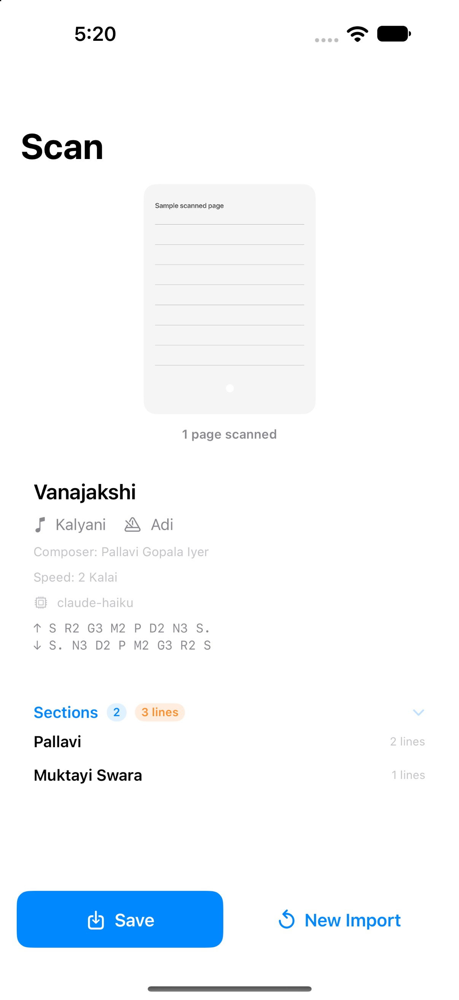
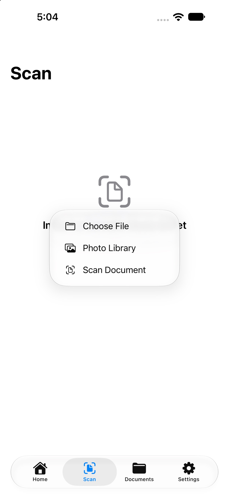
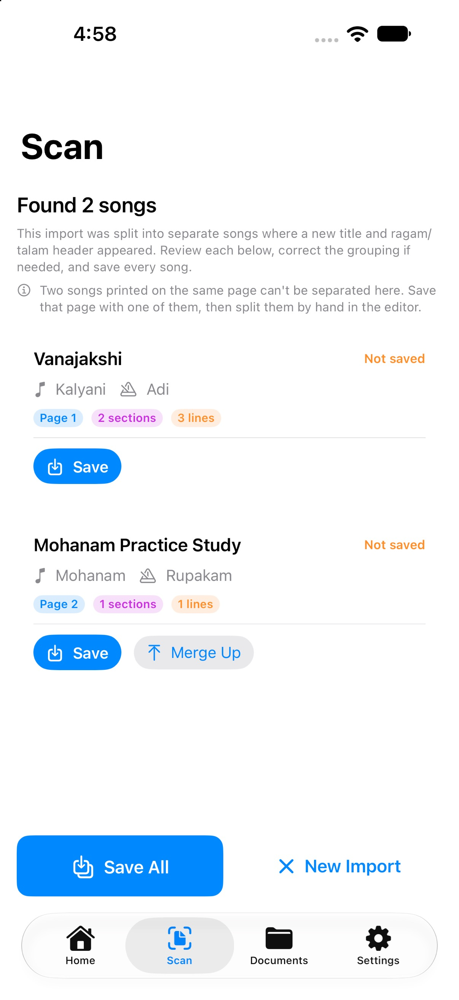
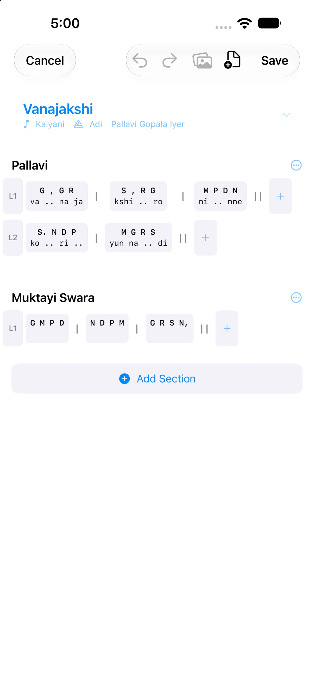
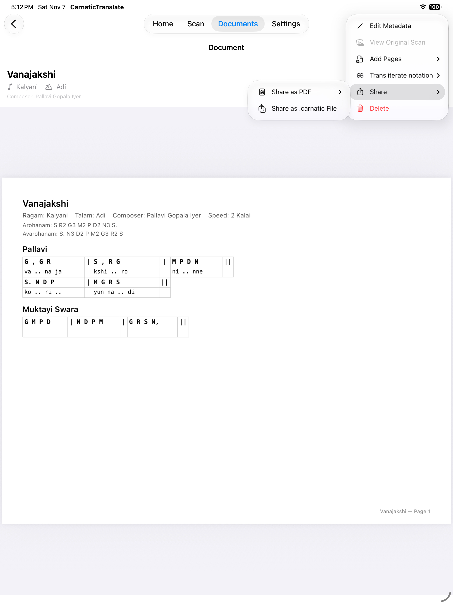

Free
3
Pages per monthly allowance period
Free
In development · iPhone & iPad · Ages 13+
Bring your Carnatic music sheets into an editable library. Scan or import a page, review the AI transcription, and make the notation your own.
For musicians, students and teachers.

See the same swaras and lyrics in Latin, Telugu, Kannada, and Tamil.
| Swaras | S. R G | స. రి గ | ಸ. ರಿ ಗ | ஸ. ரி க | | R G P, || రి గ ప, || ರಿ ಗ ಪ, || ரி க ப, || |
|---|---|---|
| Lyrics | dvA. . ద్వా. . ದ್ವಾ. . த்வா. . | llabhaM ల్లభం̣ ಲ್ಲಭಮ್̣ ல்லபம்̣ |
A period or comma after a swara marks the upper or lower octave.
The workflow
Let AI help with transcription. Keep your musical judgment at the center.
Use the camera, choose photos, or import images and multi-page PDFs. Selected pages are sent for cloud AI processing when you transcribe.
Check the notation against your source. For a scan containing several songs, review the detected groups, adjust their page ranges, merge or split, and save songs separately.
Correct cells, refine the song’s details, and save the document with its source pages. Export a PDF for sharing or printing, or a .carnatic file to reopen in the app.
Inside the app
See the workflow on iPhone and iPad.

Scan & import
Scan a music sheet with the camera or import photos and multi-page PDFs. An interrupted or failed scan keeps its working state so you can return to it.

Capture & review
Work through a multi-page source without turning it into one oversized document. Review the detected song boundaries and keep each song with the pages that belong to it.

Edit & transliterate
Edit swaras and sahitya, use notation marks, and refine ragam, talam and section details. Review the result before relying on it.

Save & export
Save notation and associated source-page images on your device. iCloud sync is optional and off by default; enable it to sync documents and source images through your own iCloud account.
Generated PDFs stay in a local cache. Turning sync off leaves existing iCloud copies in place. Read about storage and sync.
Understand the processing
Scanning sends selected images and instructions through our Cloudflare service. Your saved library lives on your device and, only if you opt in, in iCloud.
Bundled launch transcription is planned to use Anthropic’s Claude Haiku across Free, Standard and Plus. The service selects the model, and bounded retries stay with the same model.
This describes the planned public release. Beta-version processing and earlier provider routes are explained in the Privacy Policy.
Read provider and retention detailsPlanned U.S. launch pricing
Each plan includes a monthly allowance for transcribing pages. Standard and Plus are auto-renewing monthly subscriptions through the App Store.
3
Pages per monthly allowance period
Free
50
Pages per paid monthly allowance period
US$3.99 / month
100
Pages per paid monthly allowance period
US$5.99 / month
Confirm the final price in the app before subscribing. Existing users keep their issued scan allowance until the current period ends. Unused pages do not roll over. A paid allowance replaces the Free allowance while active. See page accounting and subscription terms.
Before you begin
AI can misread notes, lyrics, structure and metadata. Compare the result with your source and correct it before using, sharing or printing it. Page accounting measures a technically usable result, not musical accuracy.
No. Save documents locally with sync off. If you choose iCloud, document JSON and source images sync through Apple. Turning it off does not remove cloud copies. Keep any additional backups you need.
The intended service minimum is 13. If you are under 18, you need a parent or legal guardian’s permission. Local age and consent rules also apply. This service requirement is separate from Apple’s content age rating. Read the eligibility terms.
Document deletion, requests about server data, and Apple subscription cancellation are separate. There is currently no authenticated in-app server-data deletion workflow. Read the deletion limits or Apple’s cancellation instructions.
Stay in touch
For launch enquiries, help or feedback, contact Ananth Ram Tekkalakota.